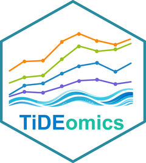

Multi-column textbox row annotation for ComplexHeatmap
Source:R/anno_multicol_textbox.R
dot-anno_multicol_textbox.RdRow annotation that displays multiple enrichment categories side by side
in a single annotation block. Follows the same interface convention as
ComplexHeatmap:::anno_textbox. Column headers are drawn above the
first module via decorate_annotation-style header placement.
Arguments
- align_to
A vector of group labels, a list of indices, or a named list mapping groups to row indices (same as
ComplexHeatmap::anno_textbox).- text
A list of per-module enrichment terms, where each element is a named list of category term data.frames (columns
text,col,fontsize). Output from.reformat_cat_terms.- background_gp
Background graphical parameters for the annotation block (fill, col, lty, lwd).
- which
"row"(only row annotations are supported).- by
Link type:
"anno_link"(default, aligns to heatmap rows) or"anno_block".- side
"right"(default) or"left".- ...
Additional arguments passed to
.multicol_textbox_grob. Notable options:show_headers(logical),header_gp(gpar for header text),header_offset(unit offset above annotation).